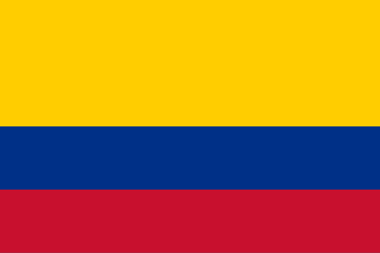

Általános információk

A kontinens 12 független országot foglal magába, több mint 430 millió lakossal. A világ legnagyobb esőerdeje, az Amazonas is itt található. A spanyol és portugál a legelterjedtebb nyelv.
Dél-Amerika a világ egyik legizgalmasabb, kulturálisan sokszínű és természeti csodákban gazdag kontinense.
A kontinens 12 független országot foglal magába, több mint 430 millió lakossal. A világ legnagyobb esőerdeje, az Amazonas is itt található. A spanyol és portugál a legelterjedtebb nyelv.

Dél-Amerikában évezredeken keresztül virágzottak ősi civilizációk, mint az inka és a maja birodalom. 1492-ben Colombus Kristóf Olasz tengerésztiszt ázsiai útján felfedezte Amerikát. Felfedezésekor még ő maga sem tudta, hogy egy új kontinensen van, ugyanis ő úgy tudta, hogy Indiába érkezett, majd mikor felfedezte, hogy egy új kontinensen van "Új világnak" nevezte. A 16. században a spanyolok és portugálok hódították meg a területeket, és hosszú gyarmati időszak következett. A 19. században kezdődtek a függetlenségi harcok, és sorra alakultak meg a mai országok.
| Ország | Jellegzetes étel | Recept |
|---|---|---|
Brazília  |
Feijoada (babos-húsos egytálétel) | |
| Peru | Ceviche (citromlében marinált hal) | |
Argentína  |
Empanada (töltött tészta batyu) | |
| Kolumbia  | Arepa (kukoricalepény) |